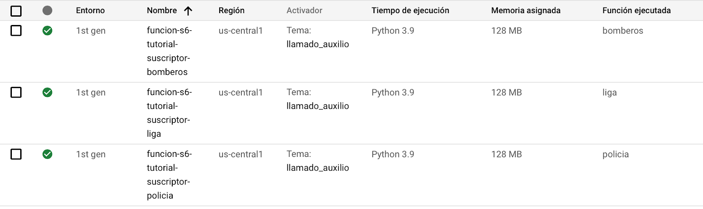

Objetivos
Al finalizar el tutorial el estudiante estará en capacidad de:
- Orquestar un conjunto de microservicios de manera asíncrona
- Crear y configurar el servicio de Pub/Sub para orquestar llamados de Cloud Function
- Explorar el funcionamiento del patrón publicador suscriptor
Requisitos para desarrollar el tutorial
En particular se utilizarán los siguientes recursos:
- Contar con una cuenta activa en Google Cloud y con recursos para la creación de servicios. Además, contar con un proyecto creado en el que deberá crear la función. En caso de no tenerlo, a continuación se encuentra el manual para crearlos y/o administrarlos: Crea y administra proyectos | Documentación de Resource Manager | Google Cloud
- Instalación y configuración para desarrollo en Python. En caso de no tenerlo instalado o correctamente configurado, a continuación se muestra el manual de instalación y configuración: Configura un entorno de desarrollo de Python | Google Cloud
- Contar con un editor o IDE para manipular de manera correcta el código. Se recomienda trabajar con Visual Studio Code, pero puede usar el editor de su preferencia. A continuación se muestran los pasos de instalación de Visual Studio Code: Visual Studio Code - Code Editing. Redefined
- Contar con gcloud SDK para acceder a los servicios del proveedor Google Cloud Platform a partir de la consola. En caso de no tenerla instalada puede consultar el siguiente manual de instalación: Instalación de SDK de Cloud | Google Cloud
Clonar el repositorio.
El código de la aplicación lo encuentra en el siguiente repositorio de GitHub gcp-pub-sub
En el repositorio va a encontrar varias funciones, una productora y las demás consumidoras. La primera se encuentra en la carpeta "function-publicador-ciudadano-http" y cuenta con la siguiente definición del servicio.
/ | |
Descripción | Realiza el llamado de auxilio de un ciudadano para notificar a los distintos servicios de ayuda |
Método | POST |
Retorno | application/json, con la información recibida en el body. |
Body de la petición | application/json, no necesita una entrada concreta o específica. |
Dinámica del ejercicio.
En este ejercicio realizaremos la implementación del patrón publicador suscriptor en uno de los casos de uso más comunes. El objetivo es diseñar e implementar un sistema de notificaciones que permita avisar a distintos servicios de ayuda, cuando un ciudadano se encuentre en peligro.
Actualmente se cuentan con tres distintos servicios de ayuda que están disponibles para la atención de distintas emergencias: La policía, los bomberos y la liga de héroes. Cuando un ciudadano realice una solicitud, se notificará a los tres servicios para que lo puedan ayudar.
A continuación se muestra el esquema de funcionamiento general de la comunicación.
A continuación se ilustra el diagrama de secuencia del llamado de las funciones:
En la carpeta function-publicador-ciudadano-http encontrará un archivo main.py el cual contiene la función publicador. Esta función hace uso de la librería google-cloud-pubsub para crear la conexión con pub-sub (línea 22), construye una mensaje con la información que deseamos enviar (línea 24) y realiza la publicación del mensaje (línea 30).

Las demás funciones ubicadas en las carpetas function-suscriptor-* no hacen uso de librerías para consumir los mensajes de los tópicos, lo que indica que el llamado a los suscriptores se delegará a la plataforma y el desarrollador solo debe enfocarse en la construcción de la lógica de la aplicación.
Debe verificar que el proyecto objetivo se encuentra seleccionado tanto el de la consola de google cloud como en la consola local de su computador.
En google cloud asegúrese de tener seleccionado el proyecto al entrar a console.cloud.google.com

En el la terminal ejecute el siguiente comando para verificar que el ID de proyecto corresponde con el se la consola de google cloud:
user@192 ~ % gcloud config get-value project
El servicio de Pub/Sub permite el manejo de eventos siguiendo el patrón de publicador suscriptor. Para poder utilizarlo necesitaremos definir un tópico o tema, en el que se publicarán los mensajes y al que se suscribirán las funciones que representan los servicios de ayuda. Para la creación del tópico ejecutaremos el siguiente comando:
user@192 ~ % gcloud pubsub topics create llamado_auxilio --message-retention-duration=1h
A continuación se explica la configuración utilizada en el tema creado:
Parámetro | Utilidad |
| Este valor hace referencia al nombre que le asignaremos al tema y con el que lo referenciaremos en posteriores usos |
| Nos permite configurar el tiempo máximo en que el mensaje se almacenará por el servicio antes de ser descartado. |
Si la ejecución del comando es exitosa, deberá observar el siguiente mensaje en la consola de comandos:
Created topic [projects/...].
Función de notificación del ciudadano (publicador)
La primera función que debemos crear, es la que se encargará de enviar el mensaje al tema creado previamente para representar un mensaje de auxilio.
Publique la función que está en la carpeta function-publicador-ciudadano-http con el siguiente comando. No olvide especificar el nombre del proyecto en el que se encuentra trabajando:
user@192 ~ % gcloud functions deploy funcion-pubsub-tutorial-publicador-ciudadano --entry-point peticion_ayuda --runtime python39 --trigger-http --allow-unauthenticated --memory 128MB --region us-central1 --timeout 60 --min-instances 0 --max-instances 1 --set-env-vars TOPIC=llamado_auxilio,PROJECT_ID=PROJECT_ID
Funciones de servicios de ayuda (suscriptores)
Las siguientes funciones que debemos crear, son las que representarán los servicios de ayuda. Estas funciones se encontrarán suscritas al tema creado anteriormente y se ejecutarán cuando se detecte un nuevo mensaje.
Publique la función que está en la carpeta function-suscriptor-bomberos con el siguiente comando.
user@192 ~ % gcloud functions deploy funcion-pubsub-tutorial-suscriptor-bomberos --entry-point bomberos --runtime python39 --trigger-topic llamado_auxilio --allow-unauthenticated --memory 128MB --region us-central1 --timeout 60 --min-instances 0 --max-instances 1
Publique la función que está en la carpeta function-suscriptor-liga con el siguiente comando.
user@192 ~ % gcloud functions deploy funcion-pubsub-tutorial-suscriptor-liga --entry-point liga --runtime python39 --trigger-topic llamado_auxilio --allow-unauthenticated --memory 128MB --region us-central1 --timeout 60 --min-instances 0 --max-instances 1
Publique la función que está en la carpeta function-suscriptor-policia con el siguiente comando.
user@192 ~ % gcloud functions deploy funcion-pubsub-tutorial-suscriptor-policia --entry-point policia --runtime python39 --trigger-topic llamado_auxilio --allow-unauthenticated --memory 128MB --region us-central1 --timeout 60 --min-instances 0 --max-instances 1
La mayoría de los parámetros de configuración se mostraron en el tutorial "Despliegue de funciones como servicio". Sin embargo, ahora el trigger que invocará a la función no será una petición http sino que se ejecutará cuando se detecte un mensaje en un tema específico. A continuación se explica el nuevo parámetro de configuración:
Parámetro | Utilidad |
| Especifica el nombre del tema de Pub/Sub al que se encuentra suscrita la función. Tenga en cuenta que no se permite especificar el de la forma projects/PROJECT_ID/topics/TOPIC_ID, solo se especifica el nombre del tema y se asume que el proyecto es el que se encuentra actualmente activo |
Una vez termine de ejecutar los comandos, diríjase a la consola de Google Cloud Platform y en la sección de Cloud Functions deberá ver todas las funciones creadas anteriormente.

Configuración de la prueba.
Para poder realizar la prueba de las funciones, deberá importar la colección de Postman que se encuentra en la carpeta collections que se encuentra dentro del repositorio. Una vez la tenga importada, deberá configurar las variables para que pueda realizar las pruebas.
Para ello iremos a las opciones de la colección que acabamos de importar, seleccionaremos la opción "editar"
Luego en la pestaña "Variables", encontrará dos variables que debe configurar para la realización de la prueba.
Variable | Descripción |
id_project | Se establece el valor del identificador del proyecto en el que se encuentra trabajando y en donde realizó la publicación de las funciones. Recuerde que lo puede obtener en el panel principal del proyecto o ejecutando el comando de validación del proyecto (ver sección Validación del proyecto). |
region | Se debe establecer el valor de la región en donde se encuentra publicada la función. Eso lo puede obtener de función en la pestaña de "Detalles" o directamente del valor configurado en el parámetro |
Ejecución de la prueba
Para probar el funcionamiento del esquema propuesto, deberemos generar una llamada de auxilio como si fuéramos un ciudadano en problemas. Para esto nos dirigiremos a la colección de postman previamente importada y procederemos a realizar una solicitud para crear un mensaje en Pub/Sub.
Una vez creadas las tareas nos dirigimos a las funciones de los servicios de ayuda y seleccionaremos la pestaña "Registro". Para cada una deberemos encontrar un mensaje indicando el llamado exitosa al servicio:
- Bomberos
- Liga de héroes
- Policía
¡Éxitos en el desarrollo del tutorial y nos vemos en una próxima oportunidad!
[1] Cloud Tasks overview | Cloud Tasks Documentation | Google Cloud. (s. f.). Google Cloud. https://cloud.google.com/tasks/docs/dual-overview
[2] Quickstart for Cloud Tasks queues | Cloud Tasks Documentation | Google Cloud. (s. f.). Google Cloud. https://cloud.google.com/tasks/docs/quickstart
[3] HTTP Functions | Cloud Functions Documentation | Google Cloud. (s. f.). Google Cloud. https://cloud.google.com/functions/docs/writing/http